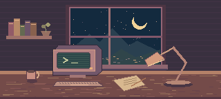

Tentang aku
Dewo Adjie Fadhillah · VLUU · Malang

Halo, aku Dewo! Di internet aku pakai nama VLUU. Aku tinggal di Malang. Biasanya aku bikin aplikasi web, ngulik antarmuka di Figma, atau nyoba rangkaian ESP32.
Di Pulau Gobi, aku bikin serial 3D low-poly. Aku suka mikirin apa yang terjadi setelah satu episode selesai. Kalau lampu jalan atau lapak baru masuk ke pulau, benda itu bisa muncul lagi di episode berikutnya.
Aku bikin KALARYA untuk nyatet tugas dan kerja bareng. Ada juga PisGo buat nyusun rencana panen pisang, dan JedaIn, proyek wisata wellness yang dapat Juara Harapan 1 di HOLOGY 9.0.